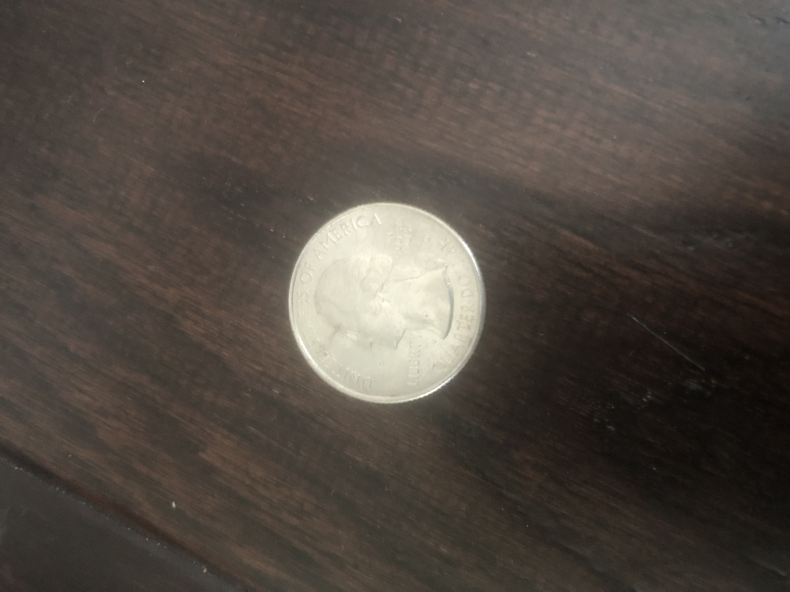

Output on Mobilenet Project -
ballpoint, ballpoint pen, ballpen, Biro
Result -
Mobilenet Project is more accurate
Test image - 
Output on Microsoft Azure -
undefined
Output on Mobilenet Project -
jelly fish
Result -
Mobilenet Project is more accurate
Result -
I have tested 5 images. Microsoft Azure has the closest guess on one image. Mobilenet Project has the closest guess on four images. So according to me, Mobilenet Project is more accurate.